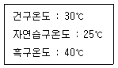
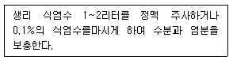

산업위생관리기사 (2013-08-18 기출문제)
1과목: 산업위생학개론
1. 다음 중 중량물 취급시 주의사항으로 틀린 것은?
- 몸을 회전하면서 작업한다.
- 허리를 곧게 펴서 작업한다.
- 다리힘을 이용하여 서서히 일어선다.
- 운반체 가까이 접근하여 운반물을 손 전체로 꽉 쥔다.
(정답률: 95%)

2. 다음 중 산업위생통계에 있어 대푯값에 해당하지 않는 것은?
- 중앙값
- 표준편차값
- 최빈값
- 산술평균값
(정답률: 67%)
3. 다음 중 직업병을 판단할 때 참고하는 자료로써 적합하지 않은 것은?
- 업무내용과 종사기간
- 발병 이전의 신체 이상과 과거력
- 기업의 산업재해 통계와 산재보험료
- 작업환경 측정 자료와 취급했을 물질의 유해성 자료
(정답률: 90%)
4. 다음 중 산업 스트레스의 관리에 있어서 집단차원에서의 스트레스 관리에 대한 내용과 가장 거리가 먼 것은?
- 직무 재설계
- 사회적 지원의 제공
- 운동과 직무외의 관심
- 개인의 적응 수준 제고
(정답률: 69%)
5. 다음 중 매년 “화학물질과 물리적 인자에 대한 노출기준 및 생물학적 노출지수”를 발간하여 노출기준 제정에 있어서 국제적으로 선구적인 역할을 담당하고 있는 기관은?
- 미국산업위생학회(AIHA)
- 미국직업안전위생관리국(OSHA)
- 미국국립산업안전보건연구원(NIOSH)
- 미국정부산업위생전문가협의회(ACGIH)
(정답률: 75%)
6. 다음 중 화학적 원인에 의한 직업성 질환으로 볼 수 없는 것은?
- 정맥류
- 치아산식증
- 수전증
- 시신경장해
(정답률: 82%)
7. 다음 중 실내공기오염(indoor air pollution)과 관련 질환에 대한 설명으로 틀린 것은?
- 실내공기 문제에 대한 증상은 명확히 정의된 질병들보다 불특정한 증상이 더 많다.
- BRI(Building Related Illness)는 건물 공기에 대한 노출로 인해 야기된 질병을 지칭하는 것으로 증상의 진단이 불가능하며 공기 중에 있는 물질에 간접적인 원인이 있는 질병이다.
- 레지오넬라균은 주요 호흡기 질병의 원인균 중 하나로써 1년까지도 물속에서 생존하는 균으로 알려져 있다.
- SBS(Sick Building Syndrome)는 점유자들이 건물에서 보내는 시간과 관계하여 특별한 증상이 없이 건강과 편안함 영향을 받는 것을 말한다.
(정답률: 51%)
8. 인쇄공장 바닥 한가운데에 인쇄기 한 대가 있다. 인쇄기로부터 10m와 20m 떨어진 지점에서 1000Hz의 음압수준을 측정한 결과 각각 88dB과 86dB이었다. 이 작업장의 총 흡음량은 약 얼마인가?
- 861 sabins
- 1322sabins
- 2435sabins
- 3422sabins
(정답률: 33%)
9. 다음 중 하인리히의 사고예방대책의 기본원리 5단계를 올바르게 나타낸 것은?
- 조직 → 사실의 발견 → 분석ㆍ평가 →시정책의 선정 → 시정책의 적용
- 조직 → 분석ㆍ평가 → 사실의 발견 →시정책의 선정 → 시정책의 적용
- 사실의 발견 → 조직 → 분석ㆍ평가 →시정책의 선정 → 시정책의 적용
- 사실의 발견 → 조직 → 시정책의 선정 → 시정 책의 적용 → 분석ㆍ평가
(정답률: 92%)
10. 다음 중 전신피로에 관한 설명으로 틀린 것은?
- 훈련받은 자와 그러지 않은 자의 근육내 글리코겐 농조는 차이를 보인다.
- 작업강도가 증가하면 근육내 글리코겐량이 비례적으로 증가되어 근육피로가 발생된다.
- 작업강도가 높을수록 혈중 포도당농도는 급속히 저하하며, 이에 따라 피로감이 빨리 온다.
- 작업대사량이 증가하면 산소소비량도 비례하여 계속 증가한 작업대사량이 일정한계를 넘으면 산소 소비량은 증가하지 않는다.
(정답률: 70%)
11. 다음 중 산업안전보건법에 의한 건강관리구분 판정 결과 “직업성 질병의 소견을 보여 사후관리가 필요한 근로자”를 나타내는 것은?
- C1
- C2
- D1
- R
(정답률: 56%)
12. 다음 중 사업장의 보건관리에 대한 내용으로 틀린 것은?
- 고용노동부장관은 근로자의 건상을 보호하기 위하여 필요하다고 인정할 때에는 사업주에게 특정 근로자에 대한 임시건강진단의 실시나 그 밖에 필요한 조치를 명 할 수 있다.
- 사업주는 산업안전보건위원회 또는 근로자대표가 요구할 때에는 본인의 동의 없이도 건강진단을 한 건강진단기관으로 하여금 건강진단 결과에 대한 설명을 하도록 할 수 있다.
- 고용노동부장관은 직업성 질환의 진단 및 예방, 발생원인의 규명을 위하여 필요하다고 인정할 때에는 근로자의 질병과 작업장의 유해요인의 상관관계에 관한 직업성 질환 역학조사를 할 수 있다.
- 사업주는 유해하거나 위험한 작업으로써 대통령령으로 정하는 작업에 종사하는 근로자에게는 1일 6시간, 1주 34시간을 초과하여 근로하게 하여서는 아니 된다.
(정답률: 83%)
13. 다음 중 사무실 공기관리 지침에 관한 설명으로 틀린 것은?
- 사무실 공기의 관리기준은 8시간 시간가중평균농도를 기준으로 한다.
- PM10이란 입경이 10 이하인 먼지를 의미한다.
- 총부유세균의 단위는 CFU/로 1중에 존재하고 있는 집락형성 세균 개체수를 의미한다.
- 사무실 공기질의 모든 항목에 대한 측정결과는 측 정치 전체에 대한 평균값을 이용하여 평가한다.
(정답률: 81%)
14. 산업피로의 검사방법 중에서 CMI(Cornel Medical Index)조사에 해당하는 것은?
- 생리적 기능검사
- 생화학적 검사
- 동작 분석
- 피로자각 증상
(정답률: 64%)
15. 다음 중 근육작업 근로자에게 비타민 B1을 공급하는 이유로 가장 적절한 것은?
- 영양소를 환원시키는 작용이 있다.
- 비타민 B1이 산화될 때 많은 열량을 발생한다.
- 글리코겐합성을 돕는 효소의 활동을 증가시킨다.
- 호기적 산화를 도와 근육의 열량공급을 원활하게해 준다.
(정답률: 68%)
16. 작업이 요구하는 힘이 5kg이고, 근로자가 가지고 있는 최대 힘이 20kg이라면 작업강도는 몇 %MS가 되는가?
- 4%
- 10%
- 25%
- 40%
(정답률: 78%)
17. 미국산업위생학술원(AAIH)이 채택한 윤리강령 중 기업주와 고객에 대한 책임에 해당하는 내용은?
- 일반 대중에 관한 사항은 정직하게 발표한다.
- 위험요소와 예방조치에 관하여 근로자와 상담한다.
- 성실성과 학문적 실력면에서 최고 수준을 유지한다.
- 궁극적 책임은 기업주와 고객보다 근로자의 건강 보호에 있다.
(정답률: 79%)
18. 상시근로자수가 100명인 A 사업장의 연간 재해발생 건수가 15건이다. 이때의 사상자가 20명 발생하였다면 이 사업장의 도수율은 약 얼마인가?(단, 근로자는 1인당 연간 2,200시간을 근무하였다.)
- 68.18
- 90.91
- 150
- 200
(정답률: 82%)
19. 다음 중 산업안전보건법에 따른 노출기준 사용상의 유의 사항에 관한 설명으로 틀린 것은?
- 노출기준은 대기오염의 평가 또는 관리상의 지표로 사용할 수 있다.
- 각 유해인자의 노출기준은 해당 유해인자가 단독으로 존재하는 경우의 노출기준을 말한다.
- 노출기준은 1일 8시간 작업을 기준으로 하여 제정된 것이므로 이를 이용할 경우에는 근로시간, 작업의 강도, 온열조건, 이상기압 등이 노출기준 적용에 영향을 미칠 수 있으므로 이와 같은 제반요인을 특별히 고려하여야 한다.
- 유해인자에 대한 감수성은 개인에 따라 차이가 있고, 노출기준 이하의 작업환경에서도 직업성 질병에 이환되는 경우가 있으므로 노출기준은 직업병진단에 사용하거나 노출기준 이하의 작업환경이라는 이유만으로 직업성질병의 이환을 부정하는 근거 또는 반증자료로 사용하여서는 아니 된다.
(정답률: 87%)
20. 다음 중 산업위생의 기본적인 과제를 가장 올바르게 표현한 것은?
- 작업환경에 의한 정신적 영향과 적합한 환경의 연구
- 작업능력의 신장 및 저하에 따른 작업조건의 연구
- 작업장에서 배출된 유해물질이 대기오염에 미치는 영향에 대한 연구
- 노동력 재생산과 사회 심리적 조건에 관한 연구
(정답률: 45%)
2과목: 작업위생측정 및 평가
21. 두 개의 버블러를 연속적으로 연결하여 시료를 채취할 때 첫 번째의 버블러의 채취효율이 75%이고 두번째 버블러의 채취효율이 90%이면 전체 채취효율은?
- 91.5%
- 93.5%
- 95.5%
- 97.5%
(정답률: 78%)
22. 입자상 물질 채취를 위하여 사용되는 직경분립충돌기의 장점 또는 단점으로 틀린 것은?
- 호흡기의 부분별로 침착된 입자크기의 자료를 추정 할 수 있다.
- 되튐으로 인한 시료의 손실이 일어날 수 있다.
- 채취준비 시간이 적게 소요된다.
- 입자의 질량크기분포를 얻을 수 있다.
(정답률: 78%)
23. 입자상 물질 시료 채취용 여과지에 대한 설명으로 틀린 것은?
- 유리섬유 여과지는 흡습성이 적고, 열에 강함
- PVC 막여과지는 흡습성이 적고 가벼움
- MCE 막여과지는 산에 잘 녹아 중량분석에 적당함
- 은막 여과지는 코크스 제조공정에서 발생되는 코크스 오븐 배출물질 채취에 사용됨
(정답률: 81%)
24. 알고 있는 공기 중 농도를 만드는 방법인 Dynamic Method의 장단점으로 틀린 것은?
- 만들기가 복잡하고 가격이 고가이다.
- 일정한 부피만 만들 수 있어 장시간 사용이 어렵다.
- 소량의 누출이나 벽면에 의한 손실은 무시할 수 있다.
- 다양한 농도범위에서 제조 가능하다.
(정답률: 65%)
25. 어느 공장에 A 용제 30%(TLV:1200mg/m3), B용제 30%(TLV:1400mg/m3) 및 C용제 40%(TLV:1600mg/m3의 중량비로 조성된 액체용제가 증발되어 작업환경을 오염시킬 경우 이 혼합물의 허용농도는?
- 1400mg/m3
- 1450mg/m3
- 1500mg/m3
- 1550mg/m3
(정답률: 79%)
26. 활성탄에 흡착된 유기화합물을 찰탁하는데 가장 많이 사용하는 용매는?
- 클로로포름
- 이황화탄소
- 톨루엔
- 메틸클로로포름
(정답률: 86%)
27. 산업보건분야에서 스토크식을 대신하여 크기 1 ~50㎛인 입자의 침강속도(cm/sec)를 구하는 식으로 적절한 것은?
- 0.03 × (입자의 비중) × 입자의직경, ㎛)2
- 0.003 × (입자의 비중) × 입자의직경, ㎛)2
- 0.03 × (공기의 점성계수) × 입자의직경, ㎛)2
- 0.003 × (공기의 점성계수) × 입자의직경, ㎛)2
(정답률: 92%)
28. 공기중 벤젠농도를 측정한 결과 17mg/m3으로 검출되었다. 현재, 공기의 온도가 25℃, 기압은 1.0atm이고 벤젠의 분자량이 78 이라면 공기 중 농도는 몇 ppm인가?
- 6.9ppm
- 5.3ppm
- 3.1ppm
- 2.2ppm
(정답률: 83%)
29. 다음 용제 중 극성이 가장 강한 것은?
- 에스테르류
- 케톤류
- 방향족 탄화수소류
- 알데하이드류
(정답률: 69%)
30. 다음 중 미국 ACGIH에서 정의한 (A) 흉곽성 먼지(Thoracic particulate mass, TPM)와 (B)호흡성 먼지(Respirable particulate mass, RPM)의 평균입자크기로 옳은 것은?
- (A) 5㎛ (B) 15㎛
- (A) 15㎛ (B) 5㎛
- (A) 4㎛ (B) 10㎛
- (A) 10㎛ (B) 4㎛
(정답률: 88%)
31. 유량, 측정시간, 회수율 및 분석에 의한 오차가 각각 10, 5, 7 및 5%였다. 만약 유량에 의한 오차(10%)를 5%로 개선시켰다면 개선 후의 누적 오차는?
- 8.9%
- 11.1%
- 12.4%
- 14.3%
(정답률: 83%)
32. 석면측정방법인 전자 현미경법에 관한 설명으로 옳지 않은 것은?
- 분석시간이 짧고 비용이 적게 소요된다.
- 공기중 석면시료분석에 가장 정확한 방법이다.
- 석면의 감별분석이 가능하다.
- 위상차현미경으로 볼 수 없는 매우 가는 섬유도 관찰이 가능하다.
(정답률: 86%)
33. 1/1 옥타브 밴드 중심주파수가 125Hz 일 때 하한 주파수로 가장 적절한 것은?
- 70Hz
- 80Hz
- 90Hz
- 100Hz
(정답률: 60%)
34. 초기무게가 1.260g인 깨끗한 PVC여과지를 하이볼륨 시료 채취기(High-volume sampler)에 장착하여 어떤 작업장에서 오전 9시부터 오후 5시까지 2.5L/분의 유량으로 시료 채취기를 작동시킨 후 여과지의 무게를 측정한 결과, 1.280g 이었다면 채취한 입자상 물질의 작업장 내 평균농도(mg/m3)는?
- 7.8
- 13.4
- 16.7
- 19.2
(정답률: 69%)
35. 옥외(태양광선이 내리쬐지 않는 장소)의 온열조건이 다음과 같은 경우에 습구흑구온도지수(WBGT)는?

- 28.5℃
- 29.5℃
- 30.5℃
- 31.0℃
(정답률: 84%)
36. 가스 측정을 위한 흡착제인 활성탄의 제한점에 관한 내용으로 틀린 것은?
- 휘발성이 매우 큰 저분자량의 탄화수소 화합물의 채취 효율이 떨어짐
- 암모니아, 에틸렌, 염화수소와 같은 고비점 화합물에 비효과적임
- 비교적 높은 습도는 활성탄의 흡착용량을 저하시킴
- 케톤의 경우 활성탄 표면에서 물을 포함하는 반응에 의해 파괴되어 탈착률과 안정성에 부절적함
(정답률: 57%)
37. 소음작업장에서 두 기계 각각의 음압레벨이 90dB로 동일하게 나타났다면 두 기계가 모두 가동되는 이 작업장의 음압레벨은? (단, 기타 조건은 같음)
- 93dB
- 95dB
- 97dB
- 99dB
(정답률: 87%)
38. 다음은 공기유량을 보정하는데 사용하는 표준기구 들이다. 다음 중 1차 표준기구에 포합되지 않는 것은?
- 오리피스 미터
- 폐활량계
- 가스치환병
- 유리 피스톤 미터
(정답률: 84%)
39. NaOH(나트륨 원자량 :23) 10g을 10리터의 용액에 녹였을 때 이 용액의 물농도는?
- 0.025M
- 0.25M
- 0.⑤M
- 0.5M
(정답률: 55%)
40. 어느 작업장의 n-Hexane의 농도를 측정한 결과24.5ppm, 20.2ppm, 25.1ppm, 22.4ppm, 23.9ppm을 각각 얻었다. 기하평균치(ppm)는?
- 23.2
- 23.8
- 24.2
- 24.8
(정답률: 84%)
3과목: 작업환경관리대책
41. 방진재료로 사용하는 방진고무의 장단점으로 틀린 것은?
- 공기 중의 오존에 의해 산화된다.
- 내부마찰에 의한 발열 때문에 열화되고 내유 및 내열성이 약하다.
- 동적배율이 낮아 스프링 정수의 선택범위가 좁다.
- 고무자체의 내부마찰에 의해 저항을 얻을 수 있고 고주파 진동의 차진에 양호하다.
(정답률: 67%)
42. 방독마스크를 효과적으로 사용할 수 있는 작업으로 가장 적절한 것은?
- 오래 방치된 우물 속의 작업
- 맨홀 작업
- 오래 방치된 정화조 내 작업
- 지상의 유해물질 중독 위험작업
(정답률: 84%)
43. 어느 유체관의 유속이 10m/sec이고 관의 반경이 15mm일 때 유량(m3/hr)은?
- 약 25.5
- 약 27.5
- 약 29.5
- 약 31.5
(정답률: 68%)
44. 사무실 직원이 모두 퇴근한 6시30분에 CO2 농도는 1700ppm이였다. 4시간이 지난 후 다시 CO2 농도를 측정한 결과 CO2 농도는 800ppm 이었다면 이 사무실의 시간당 공기교환 횟수는? (단, 외부공기 중 CO2 농도는 330ppm)
- 0.11
- 0.19
- 0.27
- 0.35
(정답률: 63%)
45. 송풍기 정압이 3.5cmH2 일 때 송풍기의 회전속도가 180rpm 이다. 만약 회전속도가 360rpm으로 증가되었다면 송풍기 정압은? (단, 기타 조건은 같다고 가정 함)
- 16cmH2O
- 14cmH2O
- 12cmH2O
- 10cmH2O
(정답률: 75%)
46. 개인보호구에서 귀 덮개의 장점 퉁 틀린 것은?
- 귀마개보다 높은 차음효과를 얻을 수 있다.
- 동일한 크기의 귀 덮개를 대부분의 근로자가 사용 할 수 있다.
- 귀에 염증이 있어도 사용할 수 있다.
- 고온에서 사용해도 불편이 없다.
(정답률: 79%)
47. 방사날개형 송풍기에 관한 설명으로 틀린 것은?
- 고농도 분진함유 공기나 부식성이 강한 공기를 이송시키는 데 많이 이용된다.
- 깃이 평판으로 되어 있다.
- 가격이 저렴하고 효율이 높다.
- 깃의 구조가 분진을 자체 정화할 수 있도록 되어 있다.
(정답률: 69%)
48. 송풍량이 100m3/min, 송풍기 전압이 120mmH2O, 송풍기 효율이 65%, 여유율이 1.25인 송풍기의 소요 동력은?
- 6.0kW
- 5.2kW
- 4.5kW
- 3.8kW
(정답률: 74%)
49. 유해성 유기용매 A가 7m×14m×4m의 체적을 가진방에 저장되어 있다. 공기를 공급하기 전에 측정한 농도는 400ppm 이었다. 이 방으로 60m3/min의 공기를 공급한 후 노출기준인 100ppm으로 달성되는데 걸리는 시간은? (단, 유해성 유기용매 증발 중단, 공급공기의 유해성 유기용매 농도는 0, 의석만 고려)
- 약 3분
- 약 5분
- 약 7분
- 약 9분
(정답률: 67%)
50. 강제 환기를 실시할 때 환기효과를 제고시킬 수 있는 원칙으로 틀린 것은?
- 오염물질 배출구는 가능한 한 오염원으로부터 가까운 곳에 설치하여 ‘점 환기’의 효과를 얻는다.
- 공기가 배출되면서 오염장소를 통과하도록 공기배출구와 유입구의 위치를 선정한다.
- 오염원 주위에 다른 작업 공정이 있으면 공기배출량을 공급량보다 약간 크게 하여 음압을 형성하여 주위 근로자에게 오염물질이 확산되지 않도록 한다.
- 공기배출구와 근로자의 작업위치 사이에 오염원이 위치하지 않도록 주의 하여야 한다.
(정답률: 85%)
51. 유해작업환경에 대한 개선 대책 중 대치(substitution) 방법에 대한 설명으로 옳지 않은 것은?
- 야광시계의 자판을 라듐 대신 인을 사용한다.
- 분체 입자를 큰 것으로 바꾼다.
- 아조염료의 합성에 디클로로벤지딘 대신 벤지딘을 사용한다.
- 금속세척작업시 TCE 대신에 계면활성제를 사용한다.
(정답률: 81%)
52. 환기시설 내 기류의 기본적인 유체역학적 원리인 질량 보존법칙과 에너지 보존법칙의 전제조건과 가장 거리가 먼 것은?
- 환기시설 내외의 열교환을 고려한다.
- 공기의 압축이나 팽창을 무시한다.
- 공기는 건조하다고 가정한다.
- 대부분의 환기시설에서는 공기 중에 포함된 유해 물질의 무게와 용량을 무시한다.
(정답률: 66%)
53. 30000ppm의 테트라클로로에틸렌(tetrachloroethylene)이 작업환경중의공기와 완전 혼합되어 있다. 이 혼합물의 유효비중(effective specific gravity)는? (단, 테트라클로로에틴렌은 공기보다 5.7배 무겁다.)
- 1.124
- 1.141
- 1.164
- 1.186
(정답률: 71%)
54. 원심력 집진장치(사이클론)에 대한 설명 중 옳지 않은 것은?
- 집진된 입자에 대한 블로우다운 영향을 최소화 하여야 한다.
- 사이클론 원통의 길이가 길어지면 선회류수가 증가하여 집진율이 증가한다.
- 입자 입경과 밀도가 클수록 집진율이 증가한다.
- 사이클론의 원통의 직경이 클수록 집진율이 감소한다.
(정답률: 47%)
55. 증기압이 1.5mmHg인 어떤 유기용제가 공기 중에서 도달할 수 있는 최고농도(포화농도)는?
- 약 8000ppm
- 약 6000ppm
- 약 4000ppm
- 약 2000ppm
(정답률: 73%)
56. 사용하는 정화통의 정화능력이 사염화탄소 0.5%에서 60분간 사용 가능 하다면 공기 중의 사염화탄소 농도가 0.2% 일 때 방독면의 유효시간(사용가능기간)은?
- 110분
- 130분
- 150분
- 180분
(정답률: 72%)
57. 덕트직경이 30cm이고 공기유속이 10m/sec 일 때 레이놀드 수는? (단, 공기의 점성계수는 1.85×10-5kg/secㆍm, 공기밀도 1.2kg/m3)
- 195000
- 215000
- 235000
- 255000
(정답률: 81%)
58. 푸쉬풀 후드(push-pull hood)에 대한 설명으로 적합하지 않는 것은?
- 도금조와 같이 폭이 넓은 경우에 사용하면 포집효율을 증가시키면서 필요유량을 감소시킬 수 있다.
- 공정에서 작업물체를 처리조에 넣거나 꺼내는 중에 발생되는 공기막 파괴현상을 사전에 방지할 수 있다.
- 개방조 한 변에서 압축공기를 이용하여 오염물질이 발생하는 표면에 공기를 불어 반대쪽에 오염물질이 도달하게 한다.
- 제어속도는 푸쉬 제트기류에 의해 발생한다.
(정답률: 62%)
59. 플렌지 없는 상방 외부식 장방형 후드가 설치되어 있다. 성능을 높게 하기 위해 플렌지 있는 외부식 측방형 후드로 작업대에 부착했다. 배기량은 얼마나 줄었겠는가? (단 포촉거리, 개구면적, 제어속도는 같다)
- 30(%)
- 40(%)
- 50(%)
- 60(%)
(정답률: 51%)
60. 가능한 한 압력손실을 줄이는 목적으로 덕트를 설치하기 위한 주요 원칙으로 틀린 것은?
- 덕트는 가능한 한 짧게 배치하도록 한다.
- 덕트는 가능한 한 상향구배를 만든다.
- 가능한 한 후드의 가까운 곳에 설치한다.
- 밴드의 수는 가능한 한 적게 하도록 한다.
(정답률: 85%)
4과목: 물리적유해인자관리
61. 다음 중 소음 평가치의 단위로 가장 적절한 것은?
- phon
- NRN
- NRR
- Hz
(정답률: 63%)
62. 단위시간에 일어나는 방사선 붕괴율을 나타내며, 초당 3.7×1010 개의 원자붕괴가 일어나는 방사능물질의 양으로 정의되는 것은?
- R
- Ci
- Gy
- Sv
(정답률: 80%)
63. 다음 중 적외선 노출에 대한 대책으로 적절하지 않은 것은?
- 차폐에 의해서 노출강도를 줄이기는 어렵다.
- 적외선으로부터 피해를 막기 위해서는 노출강도를 제한해야 한다.
- 적외선으로부터 장해를 막기 위해서는 노출기간을 제한해야 한다.
- 장해는 주로 망막이기 때문에 적외선 발생원을 직접 보는 것을 피해야 한다.
(정답률: 74%)
64. 다음 중 인공 조명에 가장 적당한 광색은?
- 노란색
- 주광색
- 청색
- 황색
(정답률: 87%)
65. 3.5 microbar를 음압레벨(음압도)로 전환한 값으로 적절한 것은?
- 65 dB
- 75 dB
- 85 dB
- 95 dB
(정답률: 46%)
66. 경기도 K시의 한 작업장에서 소음을 측정한 결과 누적 노출량계로 3시간 측정한 값(dose)이 50% 이었을 때, 측정시간 동안의 소음평균치는 약 몇 dB(A)인가?
- 85
- 88
- 90
- 92
(정답률: 38%)
67. 심해 잠수부가 해저 45m에서 작업을 할 때 인체가 받는 작용압과 절대압은 얼마인가?
- 작용압 : 5.5기압, 절대압 : 5.5기압
- 작용압 : 5.5기압, 절대압 : 4.5기압
- 작용압 : 4.5기압, 절대압 : 5.5기압
- 작용압 : 4.5기압, 절대압 : 4.5기압
(정답률: 69%)
68. 다음 중 한랭노출에 대한 신체적 장해의 설명으로 틀린 것은?
- 2도 동상은 물집이 생기거나 피부가 벗겨지는 결빙을 말한다.
- 전신 저체온증은 심부온도가 37℃에서 26.7℃ 이하로 떨어지는 것을 말한다.
- 침수족은 동결온도 이상의 냉수에 오랫동안 노출되어 생긴다.
- 침수족과 함호족의 발생조건은 유사하나 임상증상과 증후는 다르다.
(정답률: 48%)
69. 소형 또는 중형기계에 주로 많이 사용하며 적절한 방진 설계를 하면 높은 효과를 얻을 수 있는 방진 방법으로 다음 중 가장 적합한 것은?
- 공기스프링
- 방진고무
- 코르크
- 기초 개량
(정답률: 65%)
70. 다음 중 전신진동이 인체에 미치는 영향으로 볼 수 없는 것은?
- Raynaud 현상이 일어난다.
- 말초혈관이 수축되고, 혈압이 상승된다.
- 자율신경, 특히 순환기에 크게 나타난다.
- 맥박이 증가하고, 피부의 전기저항도 일어난다.
(정답률: 75%)
71. 다음 중 전이방사선에 관한 설명으로 틀린 것은?
- β입자는 핵에서 방출되면 양전하로 하전 되어 있다.
- 중성자는 하전 되어 있지 않으며 수소동위원소를 제외한 모든 원자핵에 존재한다.
- X선의 에너지는 파장에 역비례하여 에너지가 클수록 파장은 짧아진다.
- α입자는 핵에서 방출되는 입자로서 헬륨 원자의 핵과 같이 두 개의 양자와 두 개의 중성자로 구성되어 있다.
(정답률: 58%)
72. 다음 중 소음방지 대책으로 가장 효과적인 것은?
- 보호구의 사용
- 소음관리규정 정비
- 소음원의 제거
- 내벽에 흡음재료 부착
(정답률: 88%)
73. 다음은 어떤 고열장해에 대한 대책인가?

- 열경련(heat cramp)
- 열사병(heat storke)
- 열피로(heat exhaustion)
- 열쇠약(heat prostration)
(정답률: 76%)
74. 다음 중 소음성 난청에 관한 설명으로 옳은 것은?
- 음압수준은 낮을수록 유해하다.
- 소음의 특성은 고주파음보다 저주파음이 더욱 유해 하다.
- 개인의 감수성은 소음에 노출된 모든 사람이 다 똑같이 반응한다.
- 소음 노출 시간은 간헐적 노출이 계속적 노출보다덜 유해하다.
(정답률: 73%)
75. 다음 중 저압 환경에 대한 직업성 질환의 내용으로 틀린 것은?
- 고산병을 일으킨다.
- 폐수종을 일으킨다.
- 신경 장해를 일으킨다.
- 실소가스에 대한 마취작용이 원인이다.
(정답률: 60%)
76. 비전리방사선의 종류 중 옥외작업을 하면서 콜타르의 유도체, 벤조피렌, 안트라센 화합물과 상호작용하여 피부암을 유발시키는 것으로 알려진 비전리 방사선은?
- γ선
- 자외선
- 적외선
- 마이크로파
(정답률: 67%)
77. 공기의 구성 성분에서 조성비율이 표준공기와 같을 때 압력이 낮아져 고용노동부에서 정한 산소결핍장소에 해달하게 되는데, 이 기준에 해달하는 대기압 조건은 약 얼마인가?
- 650 mmHg
- 670mmHg
- 690 mmHg
- 710mmHg
(정답률: 55%)
78. 다음 중 조명과 채광에 관한 설명으로 틀린 것은?
- 1m2당 1 lumen의 빛이 비칠 때의 밝기를 1 lux 라고 한다.
- 사람이 밝기에 대한 감각은 방사되는 광속과 파장에 의해 결정된다.
- 1 lumen은 단위 조도의 광원으로부터 입체각으로 나가는 광속의 단위이다.
- 조명을 작업환경의 한 요인으로 볼 때 고려해야 할 중요한 사항은 조도와 조도의 분포, 눈부심과 휘도, 빛의 색이다.
(정답률: 48%)
79. 다음 중 고압작업에 관한 설명으로 옳은 것은?
- scuba와 같이 호흡장치를 착용하고 잠수하는 것은 고압 환경에 해달되지 않는다.
- 일반적으로 고압환경에서는 산소 분압이 낮기 때문에 저산소증을 유발한다.
- 산소분압이 2기압을 초과하면 산소중독이 나타나 건강 장해를 초래한다.
- 사람이 절대압 1기압에 이르는 고압환경에 노출되면 개구부가 막혀 귀, 부비강, 치아 등에 통증이나 압박감을 호소하게 된다.
(정답률: 65%)
80. 다음 중 안정된 상태에서 열 방산이 큰 것부터 작은순으로 올바르게 나열한 것은?
- 피부증발 ＞ 복사 ＞ 배뇨 ＞ 호기증발
- 대류 ＞ 호기증발 ＞ 배뇨 ＞ 피부증발
- 피부증발 ＞ 호기증발 ＞ 전도 및 대류 ＞ 배뇨
- 전도 및 대류 ＞ 피부증발 ＞ 호기증발 ＞ 배뇨
(정답률: 46%)
5과목: 산업독성학
81. 다음 중 할로겐화탄화수소에 관한 설명으로 틀린 것은?
- 대개 중추신경계의 억제에 의한 마취작용이 나타난다.
- 가연성과 폭발의 위험성이 높으므로 취급시 주의 하여야 한다.
- 일반적으로 할로겐화탄화수소의 독성의 정도는 화합물의 분자량이 커질수록 증가한다.
- 일반적으로 할로겐화탄화수소의 독성의 정도는 할로겐 원소의 수가 커질수록 증가한다.
(정답률: 66%)
82. ACGIH에서 제시한 TLV에서 유해화학물질의 노출기준 또는 허용기준에 “피부” 또는 “skin" 이라는 표시가 되어 있다면 이에 대한 설명으로 가장 적합한 것은?
- 그 물질은 피부로 흡수되어 전체 노출량에 기여할 수 있다.
- 그 화학물질은 피부질환을 일으킬 가능성이 있다.
- 그 물질은 어느 때라도 피부와 접촉이 있으면 안 된다.
- 그 물질은 피주가 관련되어야 독성학적으로 의미가 있다.
(정답률: 70%)
83. 다음 중 납중독에 관한 설명으로 틀린 것은?
- 혈청 내 철이 감소한다.
- 요 중 σ-ALAD 활성치가 저하된다.
- 적혈구 내 프로토포르피린이 증가한다.
- 임상증상은 위장계통장해, 신경근육계통의 장해, 중추신경계통의 장해 등 크게 3가지로 나눌 수 있다.
(정답률: 77%)
84. 다음 중 Haber의 법칙을 가장 잘 설명한 공식은?
- K = C2 × t
- K = C × t
- K = C/t
- K = t/C
(정답률: 79%)
85. 다음 중 스티렌(styrene)에 노출되었음을 알려 주는 요 중 대사산물은?
- 페놀
- 마뇨산
- 만델린산
- 메틸마뇨산
(정답률: 59%)
86. 다음 중 금속열에 관한 설명으로 알맞지 않은 것은?
- 금속열이 발생하는 작업장에서는 개인 보호용구를 착용해야 한다.
- 금속 흉에 노출된 후 일정 시간의 잠복기를 지나 감기와 비슷한 증상이 나타난다.
- 금속열은 하루정도가 지나면 증상은 회복되나 후유증으로 호흡기, 시신경 장애 등을 일으킨다.
- 아연, 마그네슘 등 비교적 융점이 낮은 금속의 제련, 용해, 용접시 발생하는 산화금속 흉을 흡입할 경우 생기는 발열성 질병을 말한다.
(정답률: 69%)
87. 다음 중 유해물질의 흡수에서 배설까지에 관한 설명으로 틀린 것은?
- 흡수된 유해물질은 원래의 형태든, 대사산물의 형태로 배설되기 위하여 수용성으로 대사된다.
- 간은 화학물질을 대사시키고 공팥과 함께 배설시키는 기능을 가지고 있는 것과 관련하여 다른 장기보다도 여러 유해물질의 농도가 낮다.
- 유해물질은 조직에 분포되기 전에 먼저 몇 개의 막을 통과하여야 하며, 흡수속도는 유해물질의 물리 화학적 성상과 막의 특성에 따라 결정된다.
- 흡수된 유해화학물질은 다양한 비특이적 효소에 의하여 이루어지는 유해물질의 대사로 수용성이 증가되어 체외로의 배출이 용이하게 된다.
(정답률: 78%)
88. 다음 중 유기용제의 중추신경의 자극작용이 가장 강한 유기용제는?
- 아민
- 알코올
- 알칸
- 알데히드
(정답률: 60%)
89. 다음 중 생물학적 모니터링에 관한 설명으로 적절하지 않은 것은?
- 생물학적 모니터링은 작업자의 생물학적 시료에서 화학물질의 노출 정도를 추정하는 것을 말한다.
- 근로자 노출 평가와 건강상의 영향 평가 두 가지 목적으로 모두 사용될 수 있다.
- 배재용량은 최근에 흡수된 화학물질의 양을 말한다.
- 내재용량은 여러 신체 부분이나 몸 전체에서 저장된 화학물질의 양을 말하는 것은 아니다.
(정답률: 52%)
90. 다음 중 이황화탄소(CS2)에 관한 설명으로 틀린 것은?
- 감각 및 운동신경 모두에 침범한다.
- 심한 경우 불안, 분노, 자살성향 등을 보이기도 한다.
- 인조견, 셀로판, 수지와 고무제품의 용제 등에 이용된다.
- 방향족 탄화수소물 중에서 유일하게 조혈 장애를 유발한다.
(정답률: 72%)
91. 다음 중 칼슘대사에 장해를 주어 신결석을 동반한 신증후군이 나타나고 다량의 칼슘배설이 일어나 뼈의 통증, 골연화증 및 골수공증과 같은 골격계장해를 유발하는 중금속은?
- 망간(Mn)
- 수은(Hg)
- 비소(As)
- 카드뮴(Cd)
(정답률: 68%)
92. 다음 중 공기역학적 직경(aerodynamic diameter)에 대한 설명과 가장 거리가 먼 것은?
- 역학적 특성, 즉 침강속도 또는 종단속도에 의해 측정 되는 먼지 크기이다.
- 직경분립충돌기(cascade impactor)를 이용해 입자의 크기, 형태 등을 분리한다.
- 대상 입자와 같은 침강속도를 가지며 밀도가 1인 가상적인 구형의 직경으로 환산한 것이다.
- 마틴 직경, 페렛 직경, 등면적 직경(projected area diameter)의 세 가지로 나누어 진다.
(정답률: 62%)
93. 어떤 물질의 독성에 관한 인체실험 결과 안전 흡수량이 체중 kg 당 0.15mg 이었다. 체중이 60kg 인 근로자가 1일 8시간 작업할 경우 이 물질의 체내 흡수를 안전 흡수량이하로 유지하려면 공기 중 농도를 몇 mg/m3 이하로 하여야 하는가? (단, 작업시 폐환기율은 1.25m3/h, 체내 잔류율은 1.0으로 한다.)
- 0.5
- 0.9
- 4.0
- 9.0
(정답률: 75%)
94. 다음 중 남성근로자에게 생식독성을 유발시키는 유해인자 또는 물질과 가장 거리가 먼 것은?
- X-선
- 항암제
- 염산
- 카드뮴
(정답률: 66%)
95. 다음 중 채석장 및 모래 분사 작업장(sandblasting) 작업자들이 석영을 과도하게 흡입하여 발생하는 질병은?
- 규페증
- 석면폐증
- 탄폐증
- 면폐증
(정답률: 85%)
96. 다음 중 직업성 폐암을 일으키는 물질과 가장 거리가 먼 것은?
- 니켈
- 결정형 실리카
- 석면
- β-나프틸아민
(정답률: 58%)
97. 다음 중 망간에 관한 설명으로 틀린 것은?
- 주로 철합금으로 사용되며, 화학공업에서는 건전지 제조업에 사용된다.
- 급성중독시 신장장애를 일으켜 요독증(uremia)으로 8 ~ 10일 이내 사망하는 경우도 있다.
- 만성노출시 언어가 느려지고 무표정하게 되며, 소자증(micrographia) 등의 증상이 나타나기도 한다.
- 망간은 호흡기, 소화기 및 피부를 통하여 흡수되며, 이 중에서 호흡기를 통한 경로가 가장 많고 위험하다.
(정답률: 49%)
98. 다음 중 생물학적 모니터링을 위한 시료채취시간에 제한이 없는 것은?
- 소변 중 카드뮴
- 소변 중 아세톤
- 호기 중 일산화탄소
- 소변 중 총 크롬(6가)
(정답률: 69%)
99. 다음 중 유기용제 중독자의 응급처치로 가장 적절 하지 않은 것은?
- 용제가 묻은 의복을 벗긴다.
- 유기용제가 있는 장소로부터 대피시킨다.
- 차가운 장소로 이동하여 정신을 긴장시킨다.
- 의식 장애가 있을 때에는 산소를 흡입시킨다.
(정답률: 83%)
100. 다음 중 다행방향족 화합물(PAH)에 대한 설명으로 틀린 것은?
- PAH는 벤젠고리가 2개 이상 연결된 것이다.
- PAH의 대사에 관여하는 효소는 시토크롬 P-448로 대사되는 중간산물이 발암성을 나타낸다.
- 톨루엔, 크실렌 등이 대표적이라 할 수 있다.
- PAH는 배설을 쉽게 하기 위하여 수용성으로 대사 된다.
(정답률: 70%)